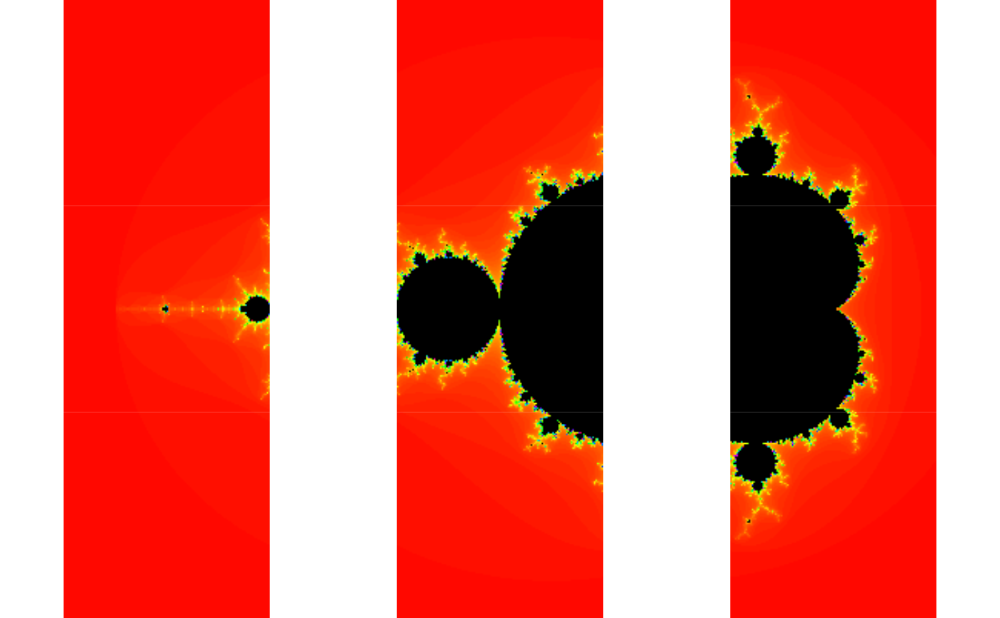

future.redis.RdThe future.redis package implements the Future API using the Redis key/value database to define partially fault-tolerant task queues for elastic distributed computing.
# \donttest{
if (redux::redis_available()) {
## The example assumes that a Redis server is running on the local host
## and standard port.
plan(redis)
startLocalWorkers(2, linger=1)
demo("mandelbrot", package = "future", ask = FALSE)
removeQ()
}
#>
#>
#> demo(mandelbrot)
#> ---- ~~~~~~~~~~
#>
#> > library("future")
#>
#> > library("graphics")
#>
#> > plot_what_is_done <- function(counts) {
#> + for (kk in seq_along(counts)) {
#> + f <- counts[[kk]]
#> +
#> + ## Already plotted?
#> + if (!inherits(f, "Future")) next
#> +
#> + ## Not resolved?
#> + if (!resolved(f)) next
#> +
#> + message(sprintf("Plotting tile #%d of %d ...", kk, n))
#> + counts[[kk]] <- value(f)
#> + screen(kk)
#> + plot(counts[[kk]])
#> + }
#> +
#> + counts
#> + }
#>
#> > ## Options
#> > region <- getOption("future.demo.mandelbrot.region", 1L)
#>
#> > if (!is.list(region)) {
#> + if (region == 1L) {
#> + region <- list(xmid = -0.75, ymid = 0.0, side = 3.0)
#> + } else if (region == 2L) {
#> + region <- list(xmid = 0.283, ymid = -0.0095, side = 0.00026)
#> + } else if (region == 3L) {
#> + region <- list(xmid = 0.282989, ymid = -0.01, side = 3e-8)
#> + }
#> + }
#>
#> > nrow <- getOption("future.demo.mandelbrot.nrow", 3L)
#>
#> > resolution <- getOption("future.demo.mandelbrot.resolution", 400L)
#>
#> > delay <- getOption("future.demo.mandelbrot.delay", interactive())
#>
#> > if (isTRUE(delay)) {
#> + delay <- function(counts) Sys.sleep(1.0)
#> + } else if (!is.function(delay)) {
#> + delay <- function(counts) {}
#> + }
#>
#> > ## Generate Mandelbrot tiles to be computed
#> > Cs <- mandelbrot_tiles(xmid = region$xmid, ymid = region$ymid,
#> + side = region$side, nrow = nrow,
#> + resolution = resolution)
#>
#> > if (interactive()) {
#> + dev.new()
#> + plot.new()
#> + split.screen(dim(Cs))
#> + for (ii in seq_along(Cs)) {
#> + screen(ii)
#> + par(mar = c(0, 0, 0, 0))
#> + text(x = 1 / 2, y = 1 / 2, sprintf("Future #%d\nunresolved", ii), cex = 2)
#> + }
#> + } else {
#> + split.screen(dim(Cs))
#> + }
#> [1] 1 2 3 4 5 6 7 8 9
#>
#> > ## Create all Mandelbrot tiles via lazy futures
#> > n <- length(Cs)
#>
#> > message(sprintf("Creating %d Mandelbrot tiles:", n), appendLF = FALSE)
#> Creating 9 Mandelbrot tiles:
#>
#> > counts <- lapply(seq_along(Cs), FUN=function(ii) {
#> + message(" ", ii, appendLF = FALSE)
#> + C <- Cs[[ii]]
#> + future({
#> + message(sprintf("Calculating tile #%d of %d ...", ii, n), appendLF = FALSE)
#> + fit <- mandelbrot(C)
#> +
#> + ## Emulate slowness
#> + delay(fit)
#> +
#> + message(" done")
#> + fit
#> + }, lazy = TRUE)
#> + })
#> 1
#> 2
#> 3
#> 4
#> 5
#> 6
#> 7
#> 8
#> 9
#>
#> > message(".")
#> .
#>
#> > ## Calculate and plot tiles
#> > repeat {
#> + counts <- plot_what_is_done(counts)
#> + if (!any(sapply(counts, FUN = inherits, "Future"))) break
#> + }
#> Plotting tile #1 of 9 ...
#> Calculating tile #1 of 9 ...
#> done
#> Plotting tile #2 of 9 ...
#> Calculating tile #2 of 9 ...
#> done
#> Plotting tile #4 of 9 ...
#> Calculating tile #4 of 9 ...
#> done
#> Plotting tile #3 of 9 ...
#> Calculating tile #3 of 9 ...
#> done
#> Plotting tile #5 of 9 ...
#> Calculating tile #5 of 9 ...
#> done
#> Plotting tile #6 of 9 ...
#> Calculating tile #6 of 9 ...
#> done
#> Plotting tile #7 of 9 ...
#> Calculating tile #7 of 9 ...
#> done
#> Plotting tile #8 of 9 ...
#> Calculating tile #8 of 9 ...
#> done
#> Plotting tile #9 of 9 ...
#> Calculating tile #9 of 9 ...
#> done
#>
#> > close.screen()
#> [1] 1 2 3 4 5 6 7 8 9
#>
#> > message("SUGGESTION: Try to rerun this demo after changing strategy for how futures are resolved, e.g. plan(multisession).\n")
#> SUGGESTION: Try to rerun this demo after changing strategy for how futures are resolved, e.g. plan(multisession).

# }